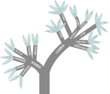

移动互联网
本词条由“科普中国”百科科学词条编写与应用工作项目 提供专业内容并参与编辑
中文名
移动互联网
外文名
Mobile Internet
所属领域
手机通讯
应用领域
通讯技术
目录
1现状
在我国互联网的发展过程中，PC互联网已日趋饱和，移动互联网却呈现井喷式发展。前瞻产业研究院发布的《中国移动互联网行业市场前瞻与投资战略规划分析报告前瞻》数据显示，截止2013年底，中国手机网民超过5亿，占比达81%。伴随着移动终端价格的下降及wifi的广泛铺设，移动网民呈现爆发趋势。
移动互联网(MobileInternet, 简称MI)是一种通过智能移动终端，采用移动无线通信方式获取业务和服务的新兴业务，包含终端、软件和应用三个层面。终端层包括智能手机、平板电脑、电子书、MID等；软件包括操作系统、中间件、数据库和安全软件等。应用层包括休闲娱乐类、工具媒体类、商务财经类等不同应用与服务。随着技术和产业的发展，未来，LTE(长期演进，4G通信技术标准之一)和NFC(近场通信，移动支付的支撑技术)等网络传输层关键技术也将被纳入移动互联网的范畴之内。
随着宽带无线接入技术和移动终端技术的飞速发展，人们迫切希望能够随时随地乃至在移动过程中都能方便地从互联网获取信息和服务，移动互联网应运而生并迅猛发展。然而，移动互联网在移动终端、接入网络、应用服务、安全与隐私保护等方面还面临着一系列的挑战。其基础理论与关键技术的研究，对于国家信息产业整体发展具有重要的现实意义。《计算机学报》刊登的“移动互联网：终端、网络与服务”一文，从移动终端、接入网络、应用服务及安全与隐私保护4个方面对移动互联网的研究进展进行阐述与分析，并对未来的研究方向进行了展望。
2用户数
截至2014年4月，我国移动互联网用户总数达8.48亿户，在移动电话用户中的渗透率达67.8%；手机网民规模达5亿，占总网民数的八成多，手机保持第一大上网终端地位。我国移动互联网发展进入全民时代。
3发展背景
互联网创造了经济神话。我们在思考：一个国家的创新能力，最终是这个国家所掌握的创新的技术在市场竞争中的表现。市场才是衡量创新价值的主要标准，而企业应是国家创新能力的主要体现者。推而广之，如果在7亿手机用户这样一个消费群体上建立一个平台，使之广泛应用到企业、商业和农村之中，是否会创造更惊天动地的奇迹？
4牌照问题
在移动互联网平台发展的初期，确实不适宜过严的监管和规定。但要看到，以安卓开放平台为主的移动市场已经形成了一条完整严密的产业链，并急速膨胀扩张。这也使其中的一些严峻问题凸显出来，开发者、广告商、SP(SP指移动互联网服务内容应用服务的直接提供者，负责根据用户的要求开发和提供适合手机用户使用的服务。)等厂商肆意利用权限收集用户隐私、恶意扣费的现象屡禁不绝。甚至有部分开发者、厂商、第三方平台相互勾结，进行恶意扣费、贩卖个人信息等不法行为，对消费者和行业环境带来了不良影响。而这样的乱象中，仅靠从业者的自律想要肃清整个行业，显然是杯水车薪。要解决上述问题，就必须有一个规范的体系和相应的管理办法。在移动互联网平台的大概念下，要解决其中存在的复杂问题，还得多管齐下，综合治理。从技术、法规、监督各个方面，给整个行业和市场带来“正能量”。
5基本特点
1、用户体验至上：如果一个商品或一项服务想要成功，在移动互联网时代，谁更加了解消费者的需求，如何了解消费者体现简单、精准的用户体验上，将决定其爆炸能量的大小，必须从与消费者发生第一点接触开始，越精确越好。
2、盈利策略不可急功近利：这些客户可能只用过手机的简单功能，盈利模式的策略上，需要企业性化和简单易懂的指引，移动互联网的强大平台，已经成为全方位、立体式。
2、盈利策略不可急功近利：这些客户可能只用过手机的简单功能，盈利模式的策略上，需要企业性化和简单易懂的指引，移动互联网的强大平台，已经成为全方位、立体式。
3、找到业务的核心竞争力：这个物品和这个物品的位置密切相关的信息，最有杀伤性的形式，这种集定位、搜索和精确数据库功能的服务必定将手机提升到改变世界的境界。森合万源的创新是颠覆性的，所谓的核心竞争力也只是暂时的。在产业链竞争中处于相对被动的情况下，握在你手中最大的砝码就是市场占有率和业务创新能力，市场占有率让你有更大的话语权和议价资格，业务创新能力则决定了自己的“卖点”。
4、把握移动营销新模型：移动互联网的一个品牌文化，移动互联网的营销模型与传统营销最大的不同，通过口碑传播吸引更多的客户，随之让参与互动，移动互联网的营销模型与传统营销最大的不同，就是直接让正确的客户为企业说正确的话，冷冰冰的广告式营销终将在这个时代里慢慢衰退。
5、整合产业链之外的资源：只要能把握移动互联网的前提，抓住行业强势资源，相关节点进行有效的整合产业的资源。
4、把握移动营销新模型：移动互联网的一个品牌文化，移动互联网的营销模型与传统营销最大的不同，通过口碑传播吸引更多的客户，随之让参与互动，移动互联网的营销模型与传统营销最大的不同，就是直接让正确的客户为企业说正确的话，冷冰冰的广告式营销终将在这个时代里慢慢衰退。
5、整合产业链之外的资源：只要能把握移动互联网的前提，抓住行业强势资源，相关节点进行有效的整合产业的资源。
6中国前景
2010年的5.17电信日显得格外让人瞩目。虽然世界电信日已经走到了第42届，但是真正让普通消费者感觉无穷威力的，恐怕要从2010年开始；移动互联网这个概念从2010年开始，已经彻底从神坛走向了生活。
播种
2000年9月19日，中国移动和国内百家ICP首次坐在了一起，探讨商业合作模式。随后时任中国移动市场经营部部长张跃率团去日本NTTDoCoMo公司I-mode取经，“移动梦网”雏形初现。
2000年12月1日开始施行的中国移动通信集团“移动梦网”计划是2001年初中国通信、互联网业最让人瞩目的事件。
2001年11月10日 ，中国移动通信的“移动梦网”正式开通。当时官方的宣传称手机用户可通过“移动梦网”享受到移动游戏、信息点播、掌上理财、旅行服务、移动办公等服务。
随后的几年，依托电信运营商的无线概念，成就了一批又一批的百万、亿万富翁。
2006年9月，针对二季度电信服务投诉突出的情况，信产部猛力推出新的电信服务规范，严格要求基础电信运营企业执行。新规范将包括：短信类业务强制执行二次确认；IVR、彩铃、WAP等非短信类业务强制执行按键确认；点播类业务强制执行全网付费提醒。这三项主要规定均针对二季度电信服务的投诉焦点。由于三项新规涵盖了“黑”SP的所有违规利润来源，因此将对国内违规SP形成封杀之势。
萌芽
如果说创建于2004年3月16日的3G门户开创的是中国FREE WAP的另外一种模式的话，那么这种模式在中国移动互联网长河里，仅仅是萌芽的开始。
在这个萌芽时期，先后冒出了搜索、音乐、阅读、游戏等领域的多种无线企业，不过，整个行业都处在混沌之中，因为没有人能够讲得清楚未来是什么，商业模式之争成为讨论最多的话题。
好景不长，一股运营商WAP网的寒流从2005年底悄封开始。2005年11月，中国移动推出一项政策，禁止SP在免费WAP上推广业务；一个月后，中国移动宣布不再向免费WAP网站提供用户的号码和终端信息。而在2006年7月，这种猜测和讨论让一大批FREE WAP站长不得不提前鸣金收兵，提前上岸。
2008年3.15晚会对于分众无线的打击，更加速了业界对于移动互联网的绝望。
洗礼
2008年12月31日上午，国务院常务会议研究同意启动第三代移动通信(3G)牌照发放工作，明确工业和信息化部按照程序做好相关工作。
2009年1月7日，工业和信息化部在内部举办小型牌照发放仪式，确认国内3G牌照发放给三家运营商，为中国移动、中国电信和中国联通发放3张第三代移动通信（3G）牌照。由此，2009年成为我国的3G元年，我国正式进入第三代移动通信时代。包括移动运营商、资本市场、创业者等各方急速杀入中国移动互联网领域，一时间，各种广告联盟、手机游戏、手机阅读、移动定位等纷纷获得千万级别的风险投资，3G概念股票逐步被热炒。顿时，围绕移动互联网的无序竞争和恶性敛财成为这个领域的意念，淫秽色情成为众多大小网站吸引用户套取广告点击最常用的手法。
2009年10月下旬开始，工信部联合中央外宣办、公安部等部门印发了整治手机淫秽色情专项行动方案，由此媒体开始陆续曝光手机涉黄情况，中国史无前例的扫黄风暴席卷整个移动互联网甚至PC互联网，11月底，各大移动运营商相继停止WAP计费。运营商的计费通道暂停，让大批移动互联网企业思考新的支付通道和运营模式，而神州行支付卡等第三方支付手段逐步成为众多移动互联网企业最主要的支付通道。
成长
2010年3月10日,中国移动全资附属公司广东移动与浦发银行签署合作协议，以人民币398亿元收购浦发银行22亿新股，中国移动将通过全资附属公司广东移动持有浦发银行20%股权，并成为浦发银行第二大股东，中国手机支付领域再掀起波浪。
发展前景
据统计，截至2012年6月底，中国网民数量达到5.38亿，其中手机网民达到3.88亿，较2011年底增加了约3270万人，网民中用手机接入互联网的用户占比由上年底的69.3%提升至72.2%。而台式电脑为3.80亿，手机网民的数量首次超越台式电脑网民的数量，也意味着移动互联网迎来了它高速发展的时期。
2010年4月11日在艾瑞的新经济年会上，信息产业部通信科技委员会委员侯自强在谈到3G商用化发展趋势的问题上，表示公共互联网也就是移动互联网将会成为未来移动网发展的主流，而移动运营商的专网垄断将会被打破。用侯委员的话来说就是移动运营商带围墙的花园将会被打破。
3G问题也是极为热门的话题之一。无论是经营者还是消费者都很关心3G的问题。经营者关心3G能否带来真正的新一代通信，而消费者则想知道3G时代的通信资费能否降低，业务体验能否满足个人的需要。3G时代话音业务不会有太大的改变，主要的突破是在数据业务上。一是面对企业高端用户的业务，主要为专网。二是面对个人消费者。而在3G/IMS专网与移动互联网之间的差异问题上，移动梦网，而移动互联网Telco2.0也就是所说的公共互联网能够服务不同用户群，运营在不同核心网，如免费WAP。3G时代需要更为开放的空间，提供更为广阔的业务和实现随时随地上网的可能。侯自强也强调说要实现移动互联网就要打破专网模式，建立移动互联网的包月体制。
从国外3GIP数据市场的经验来看，最早提出包月体制的是KDDI，但这种包月只适用于运营商专网。但是包月体制形成以来最大的转机是在2008年的12月份，和黄旗下的3UK在欧美推出了X-ServiesGold，包月费5英镑每月。而在美国是不限量包月。在这一点上，侯自强也表示3G时代移动互联网的包月体制是必然的趋势。同时，他也相信移动互联网的大爆炸时代也将很快到来。
如果按照网络接入模式来讲，要真正实现移动互联网，就会花费很大的成本，但是侯自强说到为了减少成本，可以将基站直接接入互联网而避开移动网。以颠覆性技术提供颠覆性业务，最终实现随时随地上网。
关于移动互联网的问题，在2007年3月中旬，有两大事件值得我们关注：一是3月13日，微软等6家企业联合推出借助空余电视频段实现新型无线上网。
都在谈三网融合，目的也是为了实现互通性。标准融合，跨网络浏览，实现用户按需选择的个性化服务。侯自强最后再次强调移动互联网一定会到来，而运营商的围墙花园也终要被打破。
移动互联网拥有广阔的前景，对互联网企业来说，可谓是一块巨大的蛋糕，谁都想抢先进入这个市场，赢得先机大咬一口。因此，可以预见，对移动互联网行业市场与用户的争夺将越演越烈，而这些潜在的用户拥有着与以往不同的特点，也使得互联网企业的下一步战略将面临更多的挑战。
最新趋势
 最新移动互联网统计
最新移动互联网统计2006年至2012年，中国的移动互联网市场以84.2%的速度增长。2013年的增速可能会有所放缓，但随着中国人变得更加富裕，他们在技术上的花费将变得越来越多。
“10年来，已经听说了中国的这种增长，人们都应该预料到了这种情况。但这场游戏尚处于早期阶段。”希尔弗斯坦在谈到中国对最新科技、最热门汽车、最时尚手袋的胃口时说，“我们还处于第三或第四局。”
7业务模式
十大模式
- 移动社交将成客户数字化生存的平台：在移动网络虚拟世界里面，服务社区化将成为焦点。社区可以延伸出不同的用户体验，提高用户对企业的黏性。
- 移动广告将是移动互联网的主要盈利来源：手机广告是一项具有前瞻性的业务形态，可能成为下一代移动互联网繁荣发展的动力因素。
- 手机游戏将成为娱乐化先锋：随着产业技术的进步，移动设备终端上会发生一些革命性的质变，带来用户体验的跳跃：加强游戏触觉反馈技术，可以预见，手机游戏而作为移动互联网的杀手级盈利模式，无疑将掀起移动互联网商业模式的全新变革。
- 手机电视将成为时尚人士新宠：手持电视用户主要集中在积极尝试新事物、个性化需求较高的年轻群体，这样的群体在未来将逐渐扩大。
- 移动电子阅读填补狭缝时间：因为手机功能扩展、屏幕更大更清晰、容量提升、用户身份易于确认、付款方便等诸多优势，移动电子阅读正在成为一种流行迅速传播开来。
- 移动定位服务提供个性化信息：随着随身电子产品日益普及，人们的移动性在日益增强，对位置信息的需求也日益高涨，市场对移动定位服务需求将快速增加。
- 手机搜索将成为移动互联网发展的助推器：手机搜索引擎整合搜索概念、智能搜索、语义互联网等概念，综合了多种搜索方法，可以提供范围更宽广的垂直和水平搜索体验，更加注重提升用户的使用体验。
- 手机内容共享服务将成为客户的黏合剂：手机图片、音频、视频共享被认为是未来3G手机业务的重要应用。
- 移动支付蕴藏巨大商机：支付手段的电子化和移动化是不可避免的必然趋势，移动支付业务发展预示着移动行业与金融行业融合的深入。
十、移动电子商务的春天即将到来：移动电子商务可以为用户随时随地提供所需的服务、应用、信息和娱乐，利用手机终端方便便捷地选择及购买商品和服务。
多种支付方式，使用方便。移动支付平台不仅支持各种银行卡通过网上进行支付，而且还支持手机、电话等多种终端操作，符合网上消费者最求个性化、多样化的需求。
数字分析
在如今这个快速发展的数字时代中，最令我们惊喜的变化或许就是移动设备的大量普及。对于任何品牌或者公司营销领域的人士来说，这都是一个值得引起注意的变化。因为这一变化意味着我们需要告知自己的客户“消费者、用户接入企业网站、服务的方式已经发生了改变，而企业需要对此作出应对。” 对于这一变化所发生的速度以及普及程度，我们或许可以用如下一系列数字进行说明：
1.在美国地区，如今的智能手机用户数量已经是计算机用户数量的四倍。
2.苹果在2011年总共卖出了4800万部移动设备,而同期苹果卖出的笔记本以及Mac机的数量则仅为490万台。
3.48%的美国移动订阅数字内容用户都使用智能手机。
4.2012年的智能手机用户使用率同比2011年上升了50%。
5.91%美国人无时无刻都保持自己的移动设备在可触及的范围内（即无论去哪，都会随身带着移动设备）。
6.2013年，移动手机将超越PC成为接入互联网的最主要途径。
7.有大约七分之一的搜索是通过手机完成的。
8.在2012年的“黑色星期五”期间，有24%的交易都是通过移动设备完成的。
9.94%的用户通过智能手机查找本地商家、或本地信息，其中有90%的用户在查找完成后会进行后续动作，比如进行购物或打电话进一步询问。
1.在美国地区，如今的智能手机用户数量已经是计算机用户数量的四倍。
2.苹果在2011年总共卖出了4800万部移动设备,而同期苹果卖出的笔记本以及Mac机的数量则仅为490万台。
3.48%的美国移动订阅数字内容用户都使用智能手机。
4.2012年的智能手机用户使用率同比2011年上升了50%。
5.91%美国人无时无刻都保持自己的移动设备在可触及的范围内（即无论去哪，都会随身带着移动设备）。
6.2013年，移动手机将超越PC成为接入互联网的最主要途径。
7.有大约七分之一的搜索是通过手机完成的。
8.在2012年的“黑色星期五”期间，有24%的交易都是通过移动设备完成的。
9.94%的用户通过智能手机查找本地商家、或本地信息，其中有90%的用户在查找完成后会进行后续动作，比如进行购物或打电话进一步询问。
10.只有20%的企业专门建立了针对移动设备的网站。
未来潜力
在最近几年里，移动通信和互联网成为当今世界发展最快、市场潜力最大、前景最诱人的两大业务。它们的增长速度都是任何预测家未曾预料到的。迄今，全球移动用户已超过15亿，互联网用户也已逾7亿。中国移动通信用户总数超过3.6亿，互联网用户总数则超过1亿。这一历史上从来没有过的高速增长现象反映了随着时代与技术的进步，人类对移动性和信息的需求急剧上升。越来越多的人希望在移动的过程中高速地接入互联网，获取急需的信息，完成想做的事情。所以，出现的移动与互联网相结合的趋势是历史的必然。移动互联网正逐渐渗透到人们生活、工作的各个领域，短信、铃图下载、移动音乐、手机游戏、视频应用、手机支付、位置服务等丰富多彩的移动互联网应用迅猛发展，正在深刻改变信息时代的社会生活，移动互联网经过几年的曲折前行，终于迎来了新的发展高潮。
多媒体应用
IPv6带动移动互联网发展。在移动电话领域正在掀起IP化热潮。实际上，制订下一代移动通信系统“IMT－2000”标准的3GPP已经决定在下一代移动技术的基本协议中采用IPv6。因特网及手机相关人员认为手机将率先正式使用IPv6。如果移动电话业务中配备IPv6，那么很可能在短时间内几亿手机用户将成为IPv6的用户。从这个意义上来说，移动电话的IPv6化能否顺利发展决定了IPv6的未来。反过来，IPv6也推动了一些IPv6相关标准的发展。
（IPv6是Internet Protocol Version 6的缩写，其中Internet Protocol译为“互联网协议”。IPv6是IETF（互联网工程任务组，Internet Engineering Task Force）设计的用于替代现行版本IP协议（IPv4）的下一代IP协议。IP协议的版本号是4（简称为IPv4），它的下一个版本就是IPv6。）
通过在移动互联网中实施IPv6，网络运营商可以更加灵活地应对市场需求。除了为互联网带来更多的地址资源以外，IPv6还为网络带来很多重要功能，其中之一就是服务质量的提升。由于3GPP已经将IPv6定为所有IP蜂窝式网络所必备的功能，它将成为3G的重要组成部分。IPv6及其结构能够在全球骨干网一级满足更大规模的网络结构需求，并且提高了安全性和数据完整性，支持自动配置、移动计算、数据组播和更有效的网络路由聚类。
移动互联网向多媒体信息应用发展。随着技术的进步，向移动用户提供多媒体业务将是未来十年内移动通信发展的主要潮流。无线技术仍然在高速发展，未来空中接口的带宽将不断增加，手持终端的功能将不断完善和增强，它们为多种移动应用的发展开辟了广阔空间。第二代数字移动通信系统向第三代移动通信系统发展是必然的趋势。移动终端用户对移动数据业务的需求日益强烈，运营商也希望能充分利用的设备提供更多的增值服务。移动互联网的发展，需要满足实现统一IP核心网的战略要求，市场对移动数据通信的需要主要基于移动互联网。人们可以用数字功能更强的PDA、掌上机和笔记本电脑等从事大量的数据处理和显示，真正满足广大用户移动计算方面的应用需要。
智能商务
从全球电子商务的发展来看，电子商务的移动化无疑是其重要的发展趋势。尤其是随着3G业务的在全球范围内的逐渐普及，移动互联网带宽的增加所带来的技术驱动力极大地促进了移动电子商务的发展。
移动互联网采用国际先进移动信息技术，整合了互联网与移动通信技术，将各类网站及企业的大量信息及各种各样的业务引入到移动互联网之中，为企业搭建了一个适合业务和管理需要的移动信息化应用平台，提供全方位、标准化、一站式的企业移动商务服务和电子商务解决方案。
移动互联网系列产品引导移动通信技术发展，能够满足用户需要，并能够提供有竞争力的服务。包括：更高数据吞吐量，并且低时延；更低的建设和运行维护成本；与现有网络的可兼容性；更高的鉴权能力和安全能力；高品质互动操作。
移动信息化浪潮正以前所未有的迅猛之势席卷整个华夏大地，这股强大的力量正将我们推向一片信息沟通顺畅、社会发展和谐的新天地。当数不胜数的企业商家在日益竞争激烈的市场红海中奋力前行之时，移动信息化的来到给他们开辟了一条顺利驶向彼岸的快速航道。
而互联网+无线网为最佳互动营销模式。
移动支付
移动支付行业竞争的不断加剧，大型移动支付企业并购整合与资本运作日趋频繁，一大批国内优秀的移动支付品牌迅速崛起，逐渐成为移动支付行业中的翘楚乐富支付移动POS机不需要插线，一张APN卡就可以，随身携带，不限制范围，方便快捷，POS机T+1到账，节假日顺延，个体户账户对私结算，直接打入个人账户；有限公司对公，可对一般户。
8市场评价
场上正涌现出越来越多的上网移动设备，商家必须懂得如何将这些设备集成进他们的网络。

移动互联网(2张)
据Gartner咨询公司的研究，到2004年，全世界将有8亿用户使用无线数字网。这些用户可能通过手机、笔记本电脑和手持电脑等手段上网。Gartner副总裁BobEgan说，IT企业必须重新调整他们的网络安全措施和接入选择，以适应日益增长的移动设备上网需求。他认为，许多公司已经在调整公司内部的网络设置，目的是让公司员工不在公司时也能利用公司资源。因为在过去，许多公司的网络只准许员工在办公室时接入使用。Egan还指出，企业必须考虑如何支持三类无线接入技术：一是让员工通过全国的移动互联网传输数据；二是局域网的无线接入；三是设备间的无线传输。
应用领域
移动互联网是一个全国性的、以宽带IP为技术核心的，可同时提供话音、传真、数据、图像、多媒体等高品质电信服务的新一代开放的电信基础网络，是国家信息化建设的重要组成部分。而移动互联网应用最早让人们接受的方式，则是从短消息服务开始的。
近几年来，移动通信市场的特点是短信业务出现持续大幅度增长。我国的移动电话短消息服务在2002年元旦进入了发展高潮，春节期间由于短消息传送量骤增，以至于“打爆”了信息台。到2004年，我国移动短信发送总量超过2000亿条。据估计，全球每月发送的短消息约达150亿条。由于短消息业务还具有“同发”优势，即可对多个用户同时发送相同信息，为一些具有广播性质的信息服务开辟了新的途径。它作为移动数据通信的主要业务，正向多种信息服务领域发展。
中国移动通过“移动梦网”的实践和创新，带动移动互联网不断开辟新的服务领域，提供更多有价值的信息资源，促进移动互联网市场不断壮大，推动通信走向繁荣。在中国移动统一号召和监管下，各个服务提供商充分利用自身的资源优势，开展了众多令人耳目一新的短信应用。
- 资讯
以新闻定制为代表的媒体短信服务，是许多普通用户最早的也是大规模使用的短信服务。对于像搜狐、新浪这样的网站而言，新闻短信几乎是零成本，他们几乎可以提供国内最好的媒体短信服务。这种资讯定制服务已经从新闻走向社会生活的各个领域，股票、天气、商场、保险等。
- 沟通
移动QQ帮助腾讯登上了“移动梦网”第一信息发送商的宝座。通过“移动QQ”和QQ信使服务，使手机用户和QQ用户实现双向交流，一下子将两项通信业务极大地增值了。
- 娱乐
娱乐短信业务现在已经被作为最为看好的业务方向，世界杯期间各大SP推出的短信娱乐产品深受用户的欢迎，使用量狂增。原因很简单，娱乐短信业务是最能发挥手机移动特征的业务。
移动梦网的进一步发展将和数字娱乐紧密结合，而数字娱乐产业是体验经济的最核心领域。随着技术的进步，MMS的传送将给短信用户带来更多更新的娱乐体验。
- 手机上网业务
手机上网主要提供两种接入方式：手机+笔记本电脑的移动互联网接入；移动电话用户通过数据套件，将手机与笔记本电脑连接后，拨打接入号，笔记本电脑即可通过移动交换机的网络互联模块IWF，接入移动互联网。
- WAP手机上网
WAP是移动信息化建设中最具有诱人前景的业务之一，是最具个人化特色的电子商务工具。在WAP业务覆盖的城市，移动用户通过使用WAP手机的菜单提示，可直接通过GSM网接入移动互联网，网上可提供WAP、短消息、E－mail、传真、电子商务、位置信息服务等具有移动特色的互联网服务。中国移动、中国联通均已开通了WAP手机上网业务，覆盖了国内主要大中城市。那么，手机上网以后主要有什么应用？从目前来看，主要是三大方面的应用，即公众服务、个人信息服务和商业应用。公众服务可为用户实时提供最新的天气、新闻、体育、娱乐、交通及股票等信息。个人信息服务包括浏览网页查找信息、查址查号、收发电子邮件和传真、统一传信、电话增值业务等，其中电子邮件可能是最具吸引力的应用之一。商业应用除了办公应用外，恐怕移动商务是最主要、最有潜力的应用了。股票交易、银行业务、网上购物、机票及酒店预订、旅游及行程和路线安排、产品订购可能是移动商务中最先开展的应用。
- 移动电子商务
所谓移动电子商务就是指手机、掌上电脑、笔记本电脑等移动通信设备与无线上网技术结合所构成的一个电子商务体系。根据英国OVUM预测，到2005年，这种用户将增加到2．04亿，即大约1/5的移动电话用户将使用手机访问Internet。中国移动用户市场增长迅速，到2005年上半年，移动用户总数已增至3亿，所以，移动数据业务同样具有巨大的市场潜力，对运营商而言，无线网络能否提供有吸引力的数据业务则是吸引高附加值用户的必要条件。
- Java技术应用
J2ME是一种Java技术在小型器件上应用的版本，它是将Java技术优化，使之专门为在移动电话和PDA这样内存有限的设备上运行的技术。J2ME技术使交互式服务得以实现，完全超出了今天基于文本的静态的内容服务。它通过对无线器件上易用的、图形化的交互式服务的支持，使消费者有了更为丰富的服务享受。因此，在采用J2ME技术的手机和其他无线器件上，用户就可在交互的在线状态下和脱机状态下下载新的服务，如个性化股票动态报价、实时气象预报和电子游戏等。据介绍，绝大多数无线开发商都采用J2ME平台编写应用程序软件。可以说，在Java技术的帮助下，小小的无线终端设备才有可能实现诸如游戏、图形等多种信息的下载、传递。
运营商
运营商对移动商务的态度将会直接影响到它的发展。在开拓企业市场这一点，移动商务符合移动运营商的利益，得到他们的支持毫不意外。我们知道，在传统的电信业务中，企业和企业之间，企业与客户之间的信息传递占到了电信服务营业额超过一半的份额，可是移动通信更多的还限于个人与个人之间的沟通，不难想象一旦企业介入进来，运营商直接面对的客户群体可能会发生变化，新产生的运营商与企业，企业与用户之间的关系无疑会使运营商的获利点更为多样化，有人预料企业应用的这个市场可能不亚于的个人消费市场。
移动商务的发展，在相关的领域是很可能产生新的连锁反应，形成移动运营商与企业的更大范围和更紧密合作与互动。中国移动中国联通都已经表示对短信网址大力支持，可见运营商打开企业市场的心情是迫切的。短信网址也反映了拥有超过6000万小灵通用户的中国电信和中国网通的利益，他们也给予了大力支持。而移动商务真正的利润还在后续应用，发展空间无限。通过移动商务可能导致基于短信、彩信、彩E、WAP等各种相关访问流量大幅度增加，提高运营商的收入，所以两大移动运营商态度积极。当然，这种商业模式尽管还没有完全成熟，但相关问题也将在发展中得到解决。
企业获利
移动电子商务可以帮助企业做什么？企业从中如何获益？成本又如何？企业对任何技术都会从这三个角度考虑。企业之间的竞争是服务的竞争，谁能更好地服务客户，谁就能在竞争中占得先机。
移动电子商务则可以帮助企业做到这一点。移动商务的人性化和互动性的特性可以实现以人为本的个性化服务。对于企业来说，5亿手机用户就是的巨大的潜在客户群,因此，帮助企业大范围拓展客户群体。同时，移动电子商务还可以使企业向服务客户提供最基本的商业信息服务时，避免陷入额外的投入和成本支出，有很大的灵活性，便于企业操作。
个人应用
由于手机wap技术和传统互联网web技术相差甚大，企业可能不知道自己应该如何来做才能够打造好自己的移动商务平台。如果仅仅是想展示自己的企业信息及形象，可以在当地寻找国内比较出名的互联网服务提供商进行wap合作，不过wap技术及手机硬件配置正在发展期间，界面及画面的精美程度有待提高。
如果企业想打造针对某种特定行业的移动商务平台，就需要和专门的管理中心进行合作。目前国内针对移动商务平台最大的管理中心是中国移动行业门户注册管理中心，简称移动中国(MoveChina)是中国移动行业门户注册管理中心和营销型WAP、WEB双模研发中心，专注于移动行业商务平台、移动企业商务平台的技术开发和运营，旨在推动中国行业细分下的无线行业发展，为中国国内众多中小企业及社会机构建立手机门户网站服务及相关技术服务等。 企业可以在移动中国的帮助下，打造好自己的移动行业商务平台。具体关于移动行业商务平台的信息，可以登录移动中国的官方网站查看。
中国正迅速成为电台界的霍华德·斯特恩（Howard Stern）、电视界的瑞安·西克莱斯特（Ryan Seacrest）、娱乐界的TMZ网站——所有媒体中的王者。
中国网民占到该国人口的42%左右，美国为78%。2012，中国有5.64亿网民，美国为2.44亿。在这个方面，美国将永远赶不上中国。这是美国无法获胜的数字游戏。
然而，主要的互联网公司大多都是美国名字，比如谷歌、Facebook、微软和雅虎。不过，中国也依靠百度和腾讯跻身前列。虽然美国公司占据领先地位，但它们的逾三分之二流量都来自于美国以外的地方。而在美国以外，哪个国家拥有最多的互联网流量？中国。
还有智能手机领域，中国也是领头羊。市场调研公司Informa预计，到年底前，中国智能手机用户将达到大约3.54亿人。相比之下，美国将达到约2.19亿人。但中国市场拥有更多的潜力，这是因为它还没有被完全渗透。在中国，智能手机仅占到手机使用总数的29%，而在美国，这个比例为58%左右。
安卓和苹果iOS系统在中国的使用量超过了发明这两种系统的美国。2013年第一季度，中国有2.5亿部智能手机运行安卓和iOS系统，而美国为2.3亿部左右。如果把这幅场景用图表来描述，那么蓝色就是美国，红色就是中国。二者都在上升，但红色在2012年升势更猛，毫不回头。
9相关介绍
mobile web
国际通讯专业网络用语mobile web为移动网络，专指以移动设备连接浏览web的行为。mobile web称为移动网络，而不能等同于移动互联网概念。
但mobile web的标准同时说明了移动互联网的特点、优势与局限。
主要局限
- 屏幕太小
这使得它很难或根本不可能看到依赖于标准尺寸的台式电脑屏幕上的文字和图形。
- 缺乏窗口
桌上型电脑，能够打开多个窗口并且在在时间允许上进行多重任务和轻松恢复到以前的页面。 在移动网络中，只有一个网页在同一时间上进行显示。
- 导航
最多的移动设备不使用类似鼠标的指针，而是单纯的向上和向下滚动功能与触摸设备，从而限制了灵活性的导航。
- 缺乏Javascript和Cookie
-多数设备不支持客户端脚本和存储的Cookies（智能手机和iPhone除外）－－已广泛应用于大多数网站提高用户体验，促进验证数据输入提高网页访客交互体验等的关键web应用，然而多数移动设备的web端并不支持。
- 成本
带宽的接入和收费的手机网络，远高于那些固定线路的互联网接入服务。
我国的移动互联网由中国电信，中国移动与中国新联通在3G牌照发照后开展，在业务试运行与商用初期，费用成本成为用户发展的最大瓶颈之一。
代际分期
代际
| 1G
| 2G
| 2.5G
| 3G
| 4G
|
信号
| 模拟
| 数字
| 数字
| 数字
| 数字
|
制式
| GSM、CDMA
| GPRS
| CDMA2000、WCDMA、TD-SCDMA
| TD-LTE、LTE
| |
主要功能
| 语音
| 语音与数据
| 语音与数据
| 低级宽带
| 广带
|
典型应用
| 通话
| 短信-彩信
| wap网
| 高速上网与多媒体
| 高清
|
网络基础
网络已经覆盖全国，除了特别偏远的地区，基本上可以保证网络服务在中国全境都能实现。
中国移动在G网上开通的GPRS数据通信服务，带宽可以达到终端用户3k左右，可以保证中国移动WAP服务。
中国联通在CDMA网络中的数据通信服务更好一些，带宽可以达到终端用户32k。基本可以保证WAP服务。PHS网络可以提供150k左右的数据带宽。到终端可以达到32k。
发展现状
根据CNNIC相关人士介绍，作为互联网的重要组成部分，移动互联网还处在发展阶段，但是根据传统互联网的发展经验，其快速发展的临界点已经显现。在互联网络基础设施完善以及3G、移动寻址技术等技术成熟的推动下，移动互联网将迎来发展高潮。
报告显示,从移动互联网的用户数量看，3900万活跃用户已经初具规模。其中第一次访问移动互联网的时间距现在不到半年的比例约为1/4，在1年以内的比例接近一半，在2年以内的比例约为3/4。
中国互联网络信息中心分析师周洪美表示，新增用户的迅速增加，表明网民对移动互联网的使用需求越来越强烈，在短时间内会对全行业的发展起到推动作用。
不过，与传统互联网相比，3900万WAP活跃用户仅为2006年底互联网网民数的28.5%。数据显示，从2000年6月至2000年底的半年间，互联网的网站数就从2.7万个激增至26.5万，“根据互联网发展的经验判断，我国WAP互联网已经走到了一个快速增长的临界点。”
移动互联网的昨天、今天和明天
移动互联网是什么？移动互联网≠移动+互联网，移动互联网是移动和互联网融合的产物，不是简单的加法，而是乘法——移动互联网=移动×互联网。所谓长江后浪推前浪，移动互联网继承了移动随时随地随身和互联网分享、开放、互动的优势，是整合二者优势的“升级版本”，移动互联网就是下一代互联网——web3.0。
发展趋势
未来智能手持终端将占比高于70%
据艾瑞咨询统计的报告显示，中国智能手机市场占有率仅有20%，远低于智能手机市场占有率高于50%的欧美国家，相比之下有很大的发展空间。同时，智能终端的普及使得台式机，笔记本电脑与移动终端的界限越来越模糊，许多以前只能在台式机或笔记本实现的功能已经越来越多可以在智能移动终端上实现了。
搜索仍将是移动互联网的主要应用
与传统互联网模式相比，移动互联网同样对搜索的需求量非常大，在移动的状态下，非常适宜去搜索相关信息。移动搜索和信息的手机仍然将是移动互联网的主要应用。
移动与桌面互补
移动与桌面的优势将互补，实现移动和互联网的互补效应。比如说，在周末，移动互联网的使用率更高，而台式机主要在工作日，当用户更多的使用移动终端接入互联网时将为应用厂商带来巨大商机。
LBS将是未来移动互联网的趋势
未来基于位置的服务(LBS)将是移动互联网中一个非常大的突破性应用。固定和移动互联网的最大差别就是移动是非常本地化的，在位置服务和位置信息上有非常大的优势，厂商可以把用户在其位置的信息进行更多的服务和整合。比如说，当你在某个陌生的地方，可能打开你的移动终端，就能方便的找到附近的酒店，餐馆以及娱乐场所了。
新的消费模式
移动移动联网将带来新型消费模式。移动互联网的消费模式与台式机和笔记本电脑有很大不同，用户希望有更多的个性化服务。所以未来如何捕捉移动互联网的用户，为其提供全新的广告和信息服务消费方式成为业界关注的焦点。
移动互联网的发展空间还很大
基于移动互联网的市场还有很多尚待挖掘，拥有无限想象空间，伴随着移动互联网时代的到来，智能终端普及以及云计算的大规模普及，很多过去想象的应用都将成为了可能。
移动互联网是开放的世界
在移动互联网时代，包括上传，下载和浏览都是用户自己决定的，无论平台，应用以及终端，都应当遵守开放，自由，公平的原则，让用户真正到最好的应用，才能获得用户的欢迎。
云计算改变移动互联网
未来移动互联网将更多基于云的应用和云计算上，当终端，应用，平台，技术以及网络在技术和速度提升之后，将有更多具有创意和实用性的应用出现。
移动互联网的火爆曾经吸引了无数创业者涌入，大部分创业者坚信移动互联网创业的经典模式：只要有了用户就不愁盈利。但是几年下来，大多数创业者在移动互联网创业中碰的头破血流，他们有了用户也赚不到钱，大家思考过为什么吗?
移动互联网现状
移动互联网的浪潮正在席卷到社会的方方面面，新闻阅读、视频节目、电商购物、公交出行等热门应用都出现在移动终端上，在苹果和安卓商店的下载已达到数百亿次，而移动用户规模更是超过了PC用户。这让企业级用户意识到移动应用的必要性，纷纷开始规划和摸索进入移动互联网，客观上加快了企业级移动应用市场的发展。
10主要特点
很长时间以来，对于移动互联网，恰如外星人看地球的动物，远远看去并不了解，人和猪的区别，不过是一种是四条腿走路，一种是两条腿走路。对于移动互联网这样一个新奇事物不了解，人们自然用过去的经验去看，就将其定位为互联网的延伸和补充，是互联网的一个组成部分，就是互联网。这样一个思路之下，移动互联网的形态、模式、商业模式都自然想从互联网中搬过来，这件事情，从2001年10月第一个3G网络商用，这种思维举不胜举，渗透到移动互联网的各个领域，也渗透到新媒体领域。今天中国，乃至全世界没有一个商业上非常成功的新媒体，大部分传统媒体向新媒体转型都不算成功，很大程度上就是这个原因造成的。
什么是移动互联网？移动互联网这个孩子，虽然它和互联网有很大亲缘关系，甚至带着互联网的基因，流着互联网的血，但是，它不是互联网，它是一个有着新生命的孩子，它必将超越互联网，超越那些已经成为定势的思维和模式。
项立刚认为移动互联网是高速度的移动通信网络、具有智能感应能力的智勇终端、新的业务、业务管理和计费平台、客户服务支撑平台共同构成一个新的业务体系。移动互联网具有一些传统互联网的基因，但是它具有自己的特点：
相对封闭的网络体系
移动互联网的网络不是自由开放的平台，它是一个相对封闭的网络体系。基于移动互联网的平台从第一天就是有管控能力，用户也知道它是有管控能力，用户使用的态度非常不同。一个简单的例子，在互联网上，用户收到垃圾邮件，用户也不满意，但是用户知道互联网是自由开放的，没有管控，所以用户随了删除，只能隐忍。移动互联网上，用户收到垃圾短信，用户是需要运营商进行管理。
庞大的自下而上的用户群
互联网时代的用户群是从上而下，最早的用户群是有知识的人，有钱人，年龄也相对较大。移动互联网的用户群是一个很不同的用户群，最早使用移动互联网，有非常高传染性和粘着度的是三低人群，低学历、低年龄、低收入。这个人群正是因为手机学习门槛较低，价格也较低，也有通信工具紧密地联系在一起，对于手机有非常大的依赖感。对于很多在外地打工的农民工来说，他们需要交流、沟通、帮助，他们需要爱，需要正常的性生活。把他们和世界联系起来的唯一工具就是手机。智能手机让他们拥有了了解世界的更多机会。因此，他们是最有粘性的移动互联网用户。
广域的泛在网
在社会生活任何一个地方，都有一个双向交流的网络存在，从前不可想象，同时也创造了巨大机会。即使是互联网的时代，随时随地、如影随形这件事是不可能想象的，广域的泛在网就让随时随地、如影随形成为可能。这也让大量需要即时的业务和通讯成为可能。今天几乎每一个新闻事件都可能被马上发到微博上，每一个事件都可以在第一时间传播，这就是广域泛在网的作用。
高便携性与强制性
除了睡眠时间，移动设备一般都以远高于PC的使用时间伴随在其主人身边。这个特点决定了，使用移动设备上网，可以带来PC上网无可比拟的优越性，即沟通与资讯的获取远比PC设备方便。
我们被强制携带了手机，我们被强制接收信息。今天手机远不是一个通信工具，它已经从通信工具，转变为我们社会关系的全部。手机带着我们的体温，已经成为我们身体一个器官，成为我们身体的组成部分。每时每刻必须携带的手机，我们依赖它，同时我也对它越来越敏感，也越来越挑剔。互联网时代我们能容忍屏幕上的广告，屏幕大，对于我们的干扰度低，我们不开电脑，广告并不会影响我们的正常生活。智能手机的时代，我们被强制携带了手机，只要铃声一响，我们必须要看手机，提醒度很高，强制力也很强。如果大量的广告通过智能手机传输，用户会不胜其烦。
永远在线及占用用户时间碎片
智能手机已经做到了可以24小时在线。以前的服务，除了电话和短信可以做到永远在线，没有一个互联网的服务可以做到永远在线，永远不关电脑，这件事不可能做到。永远不关手机，这已经成为一种可能。通信的即时，互联网再好的即时工具不能做到，移动互联网时代，永远在线正在悄悄改变这一格局，QQ再强，它不能让用户关了电脑还能接收到信息。微信却是收到就可以提醒。
传统的信息传播是一点对多点的传播。电视时代，使用的时间非常集中，黄金时间、普通时间、垃圾时间，用户时间成为电视争夺的最核心的资源。移动互联网时代的用户随地随地携带着智能手机，也可以随地随地使用。曾经早晨第一件事情是打开电视机，早晨第一件事就是看手机，甚至坐在马桶上，吃饭时间也有很多人在使用智能手机坐公交、地铁随处可以看到用智能手机在发微博、用微信交流、玩游戏、看电子书。甚至学生在课堂上，家庭主妇在洗碗时都会用手机看视频。而凌晨2点在微博里不难找到失眠的人。移动互联网的使用时间呈现出碎片化的倾向。差不多在任何时间都可以看到用户在使用。把用户的闲暇时间都占满了。
病毒性信息传播
曾经信息的传播是一点到多点，二次传播是一件非常难的事，所以很容易进行舆论控制。互联网时代信息已经是病毒性的传播，即从一点传播，很快进行多点发散。移动互联网时代，手机是被强制携带，信息是被强制提醒，网络是泛在的网络，手机是永远在线的。信息更容易象病毒一样高速度、广泛的、大范围的传播。因为信息的传播，很多是依据社会关系，比如自己的好友，自己的同事、同学、朋友，电话号码簿中的成员，很大程度上，受众更相信信息的可靠性。
安全性更加复杂
在互联网时代，电脑还是一个科研和办公的工具，它和个人生活紧密相联的程度远没有智能手机高。智能手机已经是人生活的一个组成部分，而它又是随时随地被携带着，是永远在线的，更容易暴露人们的隐私，也更容易成为一个安全的隐患。智能手机可以轻易地泄露用户的电话号码和朋友电话号码，可以方便地泄露短信信息，可以泄露存在手机中图片和视频。这些很容易构成安全的威胁。更为复杂的是，智能手机的GPS形成的定位功能，可以很方便的对用户进行实时跟踪，这其中的信息全面而复杂。而智能手机中正在形成的电子支付能力，远程支付的密码泄露，近场支付安全隐患，使智能手机不但是一个方便的工具，它也正在成为手雷，给社会生活的安全带来巨大的问题。
移动设备用户的隐私性远高于PC端用户的要求。不需要考虑通讯运营商与设备商在技术上如何实现它，高隐私性决定了移动互联网终端应用的特点——数据共享时即保障认证客户的有效性，也要保证信息的安全性。这就不同于互联网公开透明开放的特点。互联网下，PC端系统的用户信息是可以被搜集的。而移动通讯用户上网显然是不需要自己设备上的信息给他人知道甚至共享。
身份识别系统
和电脑相比，手机更有私密性，也和个人的身份切切相关。智能手机中电话号码就是一种身份识别，若广泛采用实名制，它也可能成为一个信用体系的一部分，在很多银行和支付系统中，手机的识别已经成为一个重要识别标志。这意味了智能手机时代的信息传播可以更精准，更有指向性。同时也具有更高的骚扰，更容易引起用户的反感。
定位系统
随时移动的智能手机，GPS/北斗等的卫星定位，以及通过基站进行定位，第一次让手机具有了随时随地的定位功用，这些功能使信息可以携带位置信息。无论是微博、微信这样的应用，还是手机拍摄的照片，都携带了位置信息。这些位置信息使传播的信息更加精准，同时也产生了众多基于位置信息的服务。有些人不喜欢定位,则会取消这个功能.
业务管理与计费平台
和传统的互联网相比，移动互联网一直是一个云管端整合的平台，它具有业务的管理与计费能力，这些能力的整合，可以让移动互联网的业务从传播更多走向服务，成为一个服务体系。计费无论是对于媒体还是服务，都是一个复杂的大问题，传统的互联网发展中，就是因为无法形成计费体系，一开始的商业模式就是广告。这也造成了很多互联网公司很长时间找不到商业模式。移动互联网因为实现了身份识别，可以永远在线，同时无论是远程支付和近场支付的技术已经成熟。业务管理和计费已经不再是大问题。
智能感应的平台
移动互联网的基本终端是智能手机，智能手机不仅具有计算、存储、通信能力，同时智能手机具有越来越强大的智能感应能力，这些智能感应让移动互联网不仅联网，而且可以感知世界，形成新的业务。
尤其这里需要强调在移动互联网发展过程中，终端的作用。传统的互联网是用PC去上网，PC虽然功能强大，但是它的移动能力差，注定决定了不需要随时携带，也不可能把众多的智能感应器内置其中，形成业务与应用。但是移动互联网的终端以智能手机为核心，这样一个智能手机，它不再是科学研究和办公的工具，而是生活助理，所以它的定位完全不同于传统的PC。
应用轻便
除了长篇大论，休闲沟通外，能够用语音通话的就用语音通话解决。移动设备通讯的基本功能代表了移动设备方便、快捷的特点。而延续这一特点及设备制造的特点，移动通讯用户不会接受在移动设备上采取复杂的类似PC输入端的操作——用户的手指情愿用“指手划脚”式的肢体语言去控制设备，也不愿意在巴掌方寸大小的设备上去输入26个英文字母长时间去沟通，或者打一篇千字以上的文章。
从以上的特点继续推断，就可得出移动互联网的基本面貌。用户选择无线上网，是不等于PC互联网。不能说移动互联网是PC互联网的延伸，同是网络建设与应用，两者之间虽然有联系，但有着根本的区别，无线上网可以提供给便携设备，但基本设备终端是手机、PDA等移动设备。设备包括了PC端便携设备，也包括了移动设备，无线环境下包括的设备体系是两者的集合（见第二回移动互联网基本网络图）。 移动互联网l移动上网的终端体系，决定了终端之间的访问，即可以移动设备对移动设备，也可以是移动设备对PC设备。不同体系之间的设备之间的交互访问，决定了应用的丰富性远甚于PC互联网。中高端的设备可以访问PC端的互联网，然而并不影响移动设备与移动设备之间的访问交互。
移动互联网l移动上网的终端体系，决定了终端之间的访问，即可以移动设备对移动设备，也可以是移动设备对PC设备。不同体系之间的设备之间的交互访问，决定了应用的丰富性远甚于PC互联网。中高端的设备可以访问PC端的互联网，然而并不影响移动设备与移动设备之间的访问交互。
 移动互联网
移动互联网纯移动设备用户上网访问应用时，要避免一切会给用户带来疑问的应用：减少下载，减少输入量。移动设备用户情愿缺少一个非必须的应用，也不愿意冒着设备被软件破坏的危险去安装一个系统或者软件。移动办公代替不了PC办公，移动办公只适宜解决信息量不是很大的问题，如远程会议，发送现场数据等，要进行大数据的采集编辑还是需要PC设备——在小小的屏幕下工程师不会使用CAD进行图形编辑，而记者也不愿意进行长达千字的OFFICE软件操作：只读不写或者加以简单的批注更为适合。
更广泛的利用触控技术进行操作，移动设备用户可以通过设备的上下左右摇摆，手指对屏幕的触动进行功能项的操作。移动通讯设备在网络上，与视频、音频的完美融合，如远程监控，远程即时会议，商务导航——这些是PC端无法比拟的。移动通讯设备对其它数码设备的支持，如车载系统，担当家电数码组合的客户端操作设备，基于隐私保护下可担当移动银行支付卡等等。
11其他信息
第一终端
根据中国互联网络信息中心(CNNIC)的第30次互联网报告显示，在2012年上半年，通过手机接入互联网的网民数量达到3.88亿，相比之下台式电脑为3.80亿，手机成为了我国网民的第一大上网终端。手机上网快速发展的同时，台式电脑这一传统上网终端的使用率在逐步下滑，中国网民互联网接入的方式呈现出全新格局。
发展规模
移动互联网业务未来短期3G手机的主要服务应用除了手机支付外，还包括手机视频、资讯阅读、影视点播、游戏、GIS地图等。在更远的未来，将会通过专业技术把很多应用转移到民生工程方面，通过专业技术创新带动民生工程中的各种便民服务。
可以预见，未来互联网产品设计将依据终端划分为两部分，一部分是比较传统的桌面 互联网，它向传统的媒体靠拢;另一部分是手机移动终端，它更加突出即时信息传播和数据的异地存储。而且，未来的手机应用将会更加注重用户体验，更加人性化，已不再是简单的软件应用，而是融入高新技术、时尚流行、虚拟社会、网络经济、以及多种用户心理的人性化解决方案。
3G时代
3G时代的移动互联网业务将向用户提供个性化、内容关联和交互作业的应用。其业务范围将涵盖信息、娱乐、旅游和个人信息管理等领域。随着语音处理技术的成熟，语音门户网站将使互联网的易用性达到新的水平。举例来说，声音识别和处理技术将实现语音浏览、查询航班时刻表和票务等网上信息。到那时，移动设备的键盘大小就不再是关键问题，因为大部分指令可以用声音实现人机交流。用户界面可以是单一模式（应答也可以转化为语音）或多重模式（有些指令和应答是图形化的）。商务模式正演变成移动性与互联网合二为一的新模式。它对运营商和供应商的能力都提出了新的要求。了解移动性和移动商务的特性将是建立未来网络与业务推出的关键环节。3G的成功将取决于速度：针对细分的客户群开发应用和终端的速度，开发新业务的速度，降低网络开发成本，使网络投入使用的速度加快。它将是把握和利用手边拥有的服务和内容的能力。
由于服务质量和反应时间事关用户对多媒体的体验，运营商此刻的商业地位极佳，既可以自己向用户提供媒体服务，又可以向内容提供商提供媒体主机托管业务。随着越来越多的内容和语音服务逐渐数字化，内容将更具移动性，更加个性化。业内各方（运营商、内容提供商、应用开发商）只有向最终用户提供高价值的服务，才能使自己占居有利位置。同时，能充分适应不同传输格式（移动终端、电视、PC）的内容才能称得上最佳。3G时代的移动互联网服务主要包括浏览、Java客户端应用、多媒体流和下载流媒体等业务。
4G时代
4G是第四代移动通信技术的简称。中国移动采用4GLTE标准中的TD-LTE。TD-LTE是由中国主导的4G网络标准，技术成熟，具有信号稳定、干扰少等优势。
词条图册更多图册
词条标签：